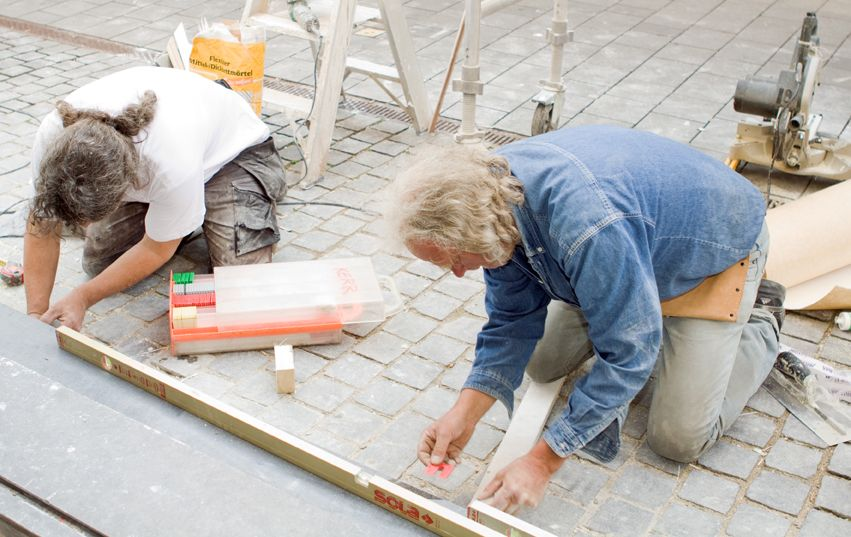

WalVis Verbouwingen is in 1998 opgericht door Arnold van Walsum en Walter Visser. Samen bouwden ze panden om tot appartementen, bouwden geluidsstudio's en deden renovatiewerk in Frankrijk. Dat leidde tot de oprichting van WalVis.
Voor elke klus de juiste vakman.
In de loop van de tijd kregen we veel freelance hulp. We weten precies op wie we voor welke klus kunnen bouwen, en dat netwerk van vakmensen groeit nog steeds. We zijn lid van VLOK, de branchevereniging voor klusbedrijven. Het voordeel is onder andere een dekking tot 80.000 euro bij extreme schadegevallen.